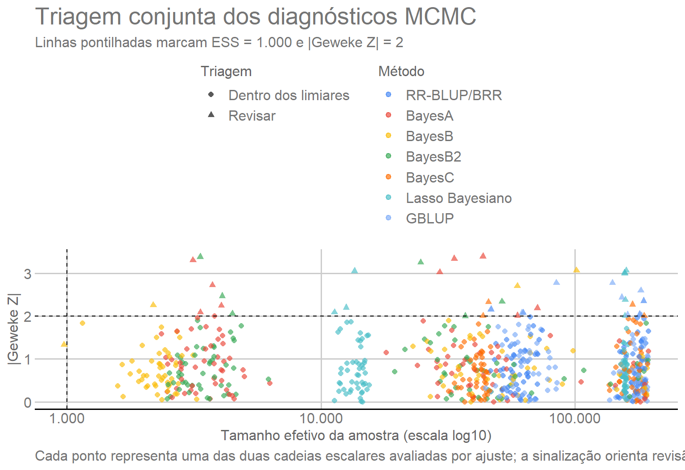

Neste módulo são ajustados sete métodos de predição genômica para dez
características do mamoeiro, utilizando os cinco folds de validação
cruzada estratificados por família construídos no Módulo 02.
O fluxo segue diretamente das matrizes para o ajuste dos modelos, a
obtenção das predições out-of-fold (OOF), a decomposição dos valores
genômicos, o cálculo das métricas por fold e os diagnósticos das cadeias
MCMC.
Os métodos avaliados são RR-BLUP/BRR, BayesA, BayesB, BayesB2,
BayesC, Lasso Bayesiano (BL) e GBLUP. Todos são ajustados com o pacote
BGLR (Pérez and
Campos 2014).
2. Pacotes e objeto de entrada
Os pacotes utilizados têm funções distintas:
BGLR: ajuste dos modelos de regressão Bayesiana,
RR-BLUP/BRR e GBLUP;
coda: cálculo dos diagnósticos das cadeias MCMC,
incluindo ESS e Geweke;
dplyr: organização, seleção e resumo das tabelas de
resultados;
ggplot2: construção do diagnóstico gráfico das cadeias
MCMC;
ggthemes: aplicação do tema e da escala de cores
GDocs;
knitr: formatação das tabelas apresentadas no
documento;
here: construção de caminhos relativos ao projeto.
library(BGLR) # Ajuste dos modelos de predição genômica.
library(coda) # Diagnósticos das cadeias MCMC.
library(dplyr) # Manipulação e resumo de tabelas.
library(ggplot2) # Construção de gráficos diagnósticos.
library(ggthemes) # Tema e escala de cores GDocs.
library(knitr) # Formatação de tabelas.
library(here) # Caminhos relativos ao projeto.
2.1 Objeto de entrada e saídas persistidas
As matrizes construídas no Módulo 02 são lidas diretamente de
output/matrices/. Durante a renderização normal, o módulo
apenas consulta as saídas já persistidas em output/models/;
nenhum diretório de cadeias é criado e nenhum ajuste é iniciado. A pasta
output/models/bglr/ é preparada somente dentro do bloco de
regeneração integral da Seção 9.
# Define a pasta das saídas persistidas e carrega diretamente o objeto matricial do Módulo 02.
OUTPUT_DIR <- here("output", "models")
matrices_object <- readRDS(
here("output", "matrices", "matrices_object.rds")
)
ids <- matrices_object$ids
metadata <- matrices_object$metadata
# Organiza os fenótipos usados na análise.
phenotypes <- matrices_object$phenotypes
trait_dictionary <- matrices_object$trait_dictionary
X <- matrices_object$X
M <- matrices_object$M
G <- matrices_object$G
cv_folds <- matrices_object$cv_folds
traits <- colnames(phenotypes)
2.2 Compatibilidade das entradas
A tabela seguinte confirma que os objetos recebidos do Módulo 02
possuem dimensões compatíveis antes de qualquer ajuste. Nenhum objeto é
filtrado ou reconstruído nesta conferência.
As cinco entradas mantêm os mesmos 150 indivíduos. A matriz
fenotípica contém 10 características, X contém 10 colunas
do desenho de família e intercepto, M possui 72 colunas de
dosagem centralizadas e G é quadrada com 150 colunas. Essa
compatibilidade permite usar a mesma ordem de indivíduos em todos os
ajustes.
3. Modelo estatístico
As dez características são contínuas e são ajustadas com
response_type = "gaussian". Assim, a especificação abaixo
descreve a média condicional usada pelo BGLR e um termo residual
associado à resposta gaussiana. A mesma estrutura de intercepto e
família é mantida para todos os métodos; o que muda é a representação
probabilística do componente genômico.
Para cada característica é considerado o modelo
\[
\mathbf y =
\mathbf 1\mu +
\mathbf X_F\boldsymbol\beta_F +
\mathbf g +
\boldsymbol\varepsilon,
\]
em que \(\mu\) é o intercepto, \(\mathbf X_F\boldsymbol\beta_F\) representa
o efeito fixo de família, \(\mathbf g\)
é o componente genômico e \(\boldsymbol\varepsilon\) é o vetor de
resíduos.
3.1 Intercepto e efeito fixo de família
O BGLR ajusta um intercepto automaticamente. Por isso, a coluna de
intercepto criada no Módulo 02 é retirada de X antes da
especificação do termo de família. As colunas restantes representam os
contrastes de FAM produzidos por
model.matrix() no Módulo 02; não se cria aqui uma nova
codificação de família.
X_fixed <- X[
,
colnames(X) != "(Intercept)",
drop = FALSE
]
data.frame(Coluna_de_familia = colnames(X_fixed)) |>
tabela_html(
caption = "Colunas de família usadas como efeitos fixos",
col.names = c("Coluna de família")
)
Colunas de família usadas como efeitos fixos
Coluna de família
FAM2
FAM3
FAM4
FAM5
FAM6
FAM7
FAM8
FAM9
FAM10
Após a remoção do intercepto, X_fixed contém 9 colunas
de contraste de família. Essas colunas entram como um único termo fixo
comum aos sete métodos.
No código do BGLR, model = "FIXED" indica que os
coeficientes associados às colunas de família são estimados como efeitos
fixos, sem a contração aplicada aos efeitos genômicos.
3.2 Componente genômico
Nos seis métodos baseados diretamente nos marcadores,
A diferença entre esses métodos está principalmente na distribuição a
priori atribuída aos efeitos dos marcadores \(\boldsymbol\alpha\).
No GBLUP, os valores genômicos são modelados diretamente por
\[
\mathbf g \sim
N\left(\mathbf 0,\mathbf G\sigma_g^2\right).
\]
4. Validação cruzada
4.1 Partição fixa e comparação pareada
Os cinco folds definidos no Módulo 02 são utilizados sem
reconstrução. Cada fold contém 30 indivíduos de validação e 120 de
treinamento, mantendo a representação das famílias. A tabela abaixo
apenas recupera essa partição já fixada; usar exatamente os mesmos folds
para todos os métodos garante uma comparação pareada quanto aos
indivíduos de validação.
tabela_html(
matrices_object$fold_summary,
caption = "Distribuição dos indivíduos nos cinco folds",
col.names = c("Fold", "Tamanho de treinamento", "Tamanho de validação")
)
Distribuição dos indivíduos nos cinco folds
Fold
Tamanho de treinamento
Tamanho de validação
1
120
30
2
120
30
3
120
30
4
120
30
5
120
30
4.2 Mascaramento dos fenótipos e escopo da validação
Durante cada ajuste, os fenótipos dos indivíduos pertencentes ao fold
de validação são substituídos por NA. O BGLR utiliza os
fenótipos restantes para o ajuste e retorna as predições para os
indivíduos mascarados. Os candidatos de validação permanecem nas
matrizes fixas derivadas dos genótipos descritas no Módulo 02.
Consequentemente, o desempenho de validação cruzada representa a
predição dentro da população de melhoramento representada, e não uma
generalização leave-family-out.
5. Configuração das cadeias MCMC
5.1 Configuração comum das cadeias
Os parâmetros centrais das cadeias são:
N_ITER = 1.000.000: número total de iterações de cada
cadeia;
BURN_IN = 200.000: iterações iniciais descartadas antes
dos diagnósticos;
THIN = 4: mantém uma amostra a cada quatro
iterações;
R2_PRIOR = 0.5: hiperparâmetro global usado pelo BGLR
para calibrar as escalas das distribuições a priori;
SEED_BASE = 202608050: início da sequência
determinística de sementes. Cada ajuste soma seu número sequencial a
essa base, de modo que as 350 combinações recebem sementes diferentes e
reproduzíveis.
Neste contexto, R2 é um hiperparâmetro de calibração a
priori do BGLR. Ele não corresponde ao coeficiente de determinação
observado, à herdabilidade estimada ou a uma medida de desempenho
preditivo. Quando determinadas escalas a priori não são fornecidas
explicitamente, o BGLR utiliza R2 para calibrá-las em
relação à variância fenotípica.
Para termos de ETA que não recebem um valor de
R2 específico, o BGLR utiliza R2 / nLT, em que
nLT é o número de termos presentes em ETA.
Neste módulo existem dois termos: o efeito fixo de família e o
componente genômico. Portanto, a calibração automática do componente
genômico utiliza 0.5 / 2 = 0.25.
Esse valor de 0,25 não significa que 25% da variância fenotípica
tenha sido estimada como genômica e não representa uma decomposição
estimada da variância entre família e genoma. Trata-se apenas de uma
quantidade utilizada pelo BGLR para definir escalas a priori. A
aplicação dessa regra ao Lasso Bayesiano é apresentada explicitamente na
Seção 6.6.
A configuração de iterações, burn-in e thinning segue a análise de
referência (Silva et al. 2021). As
quantidades de amostras gravadas, descartadas e retidas são derivadas
desses parâmetros e não constituem parâmetros adicionais do modelo.
5.2 Configurações específicas e limiares de revisão
Outras definições específicas são:
BAYESB2_ZERO_PROBABILITY = 1e-5, equivalente a
probIn = 0.99999;
BAYESB2_COUNTS = 1e6, que concentra fortemente a priori
de probIn;
ESS_REVIEW_THRESHOLD = 1000 e
GEWEKE_REVIEW_THRESHOLD = 2, usados somente como sinais de
revisão, não como critérios automáticos de exclusão;
BL_LAMBDA_TYPE = "FIXED", indicando que o lambda
calculado na Seção 6.6 permanece constante durante a cadeia.
Para separar as decisões explícitas desta análise das configurações
que permanecem sob a parametrização do pacote, a tabela a seguir resume
a origem dos principais parâmetros. Projeto indica
valores definidos diretamente neste workflow. BGLR
indica configurações que não foram sobrescritas e, portanto, seguem os
defaults ou as regras internas de calibração do pacote.
Origem das principais configurações do Módulo 03
Item
Origem
Tratamento
nIter, burnIn e thin
Projeto
Definidos explicitamente e mantidos comuns aos 350 ajustes.
R2 global
Projeto
R2 = 0,5 é passado explicitamente a todos os ajustes para calibração das
escalas a priori.
Sementes dos ajustes
Projeto
Uma sequência determinística fornece uma semente diferente e
reproduzível para cada ajuste.
BayesB2: probIn e counts
Projeto
probIn e counts são definidos explicitamente na parametrização BayesB2.
Lasso Bayesiano: type e lambda
Projeto
O lambda é calculado pela regra apresentada na Seção 6.6 e mantido fixo
durante a cadeia.
Limiares de revisão ESS e Geweke
Projeto
Definidos pelo projeto apenas como sinais de revisão, sem exclusão
automática de ajustes.
Hiperparâmetros da priori residual não informados explicitamente
BGLR
Como não são fornecidos explicitamente na chamada principal, permanecem
sob os defaults e as regras de calibração do BGLR.
Demais hiperparâmetros das prioris não informados explicitamente
BGLR
Quando não são especificados em ETA_models ou na chamada BGLR(),
permanecem sob os defaults e as regras de calibração do BGLR.
# Define o comprimento total da cadeia MCMC de cada ajuste.
N_ITER <- 1000000L
# Descarta as 200 mil iterações iniciais como burn-in.
BURN_IN <- 200000L
# Salva uma amostra a cada quatro iterações.
THIN <- 4L
# Usa R2 = 0,5 como hiperparâmetro global de calibração das escalas a priori do BGLR.
R2_PRIOR <- 0.5
# Inicia a sequência determinística de sementes; cada ajuste recebe um incremento único.
SEED_BASE <- 202608050L
# Deriva o número de amostras salvas antes e depois do descarte do burn-in.
RAW_SAVED_SAMPLES <- floor(N_ITER / THIN)
BURN_IN_SAVED_SAMPLES <- floor(BURN_IN / THIN)
RETAINED_SAMPLES <- RAW_SAVED_SAMPLES - BURN_IN_SAVED_SAMPLES
# Parametriza a variante BayesB2 com probabilidade de efeito zero igual a 1e-5.
BAYESB2_ZERO_PROBABILITY <- 1e-5
BAYESB2_PROB_IN <- 1 - BAYESB2_ZERO_PROBABILITY
# Concentra fortemente a priori de probIn em torno de 0,99999.
BAYESB2_COUNTS <- 1e6
# Sinaliza para revisão cadeias com ESS menor que 1.000.
ESS_REVIEW_THRESHOLD <- 1000
# Sinaliza para revisão cadeias com |Z de Geweke| maior que 2.
GEWEKE_REVIEW_THRESHOLD <- 2
# Mantém o lambda do Lasso Bayesiano fixo durante a cadeia.
BL_LAMBDA_TYPE <- "FIXED"
5.3 Amostras gravadas e retidas
A tabela resume as escolhas que controlam a amostragem. Com 1.000.000
de iterações e thin = 4, o BGLR grava 250.000 amostras
escalares; as primeiras 50.000 correspondem ao burn-in de 200.000
iterações, restando 200.000 amostras salvas para os diagnósticos
posteriores. Esses números são derivados dos três parâmetros da
cadeia.
Nos arquivos escalares *.dat usados abaixo, o BGLR grava
uma amostra a cada THIN iterações ao longo de toda a
cadeia, inclusive durante o burn-in. Por isso, a rotina de diagnóstico
remove explicitamente as primeiras BURN_IN_SAVED_SAMPLES
amostras gravadas. Com os valores adotados, tanto N_ITER
quanto BURN_IN são divisíveis por THIN, de
modo que a conversão entre iterações e amostras gravadas é exata e
restam RETAINED_SAMPLES amostras posteriores.
# Reúne os parâmetros MCMC em uma tabela de referência.
data.frame(
Configuracao = c(
"Iterações",
"Burn-in",
"Thinning",
"Amostras escalares gravadas",
"Amostras gravadas correspondentes ao burn-in",
"Amostras posteriores mantidas",
"R2 global (calibração a priori)",
"Probabilidade de efeito zero no BayesB2"
),
Valor = c(
N_ITER,
BURN_IN,
THIN,
RAW_SAVED_SAMPLES,
BURN_IN_SAVED_SAMPLES,
RETAINED_SAMPLES,
R2_PRIOR,
BAYESB2_ZERO_PROBABILITY
)
) |>
tabela_html(caption = "Configuração MCMC utilizada nos sete métodos")
Configuração MCMC utilizada nos sete métodos
Configuracao
Valor
Iterações
1.0e+06
Burn-in
2.0e+05
Thinning
4.0e+00
Amostras escalares gravadas
2.5e+05
Amostras gravadas correspondentes ao burn-in
5.0e+04
Amostras posteriores mantidas
2.0e+05
R2 global (calibração a priori)
5.0e-01
Probabilidade de efeito zero no BayesB2
1.0e-05
A configuração resulta em 250.000 amostras escalares gravadas por
cadeia e 200.000 amostras após a remoção da parcela correspondente ao
burn-in. Os mesmos valores de iteração, burn-in, thinning e
R2 são usados em todos os 350 ajustes.
6. Métodos de predição genômica
A tabela a seguir relaciona cada método ao componente correspondente
do BGLR e à entrada genômica utilizada. Seis métodos operam diretamente
sobre M; o GBLUP usa G. As subseções seguintes
explicam o que muda na priori ou na representação do componente
genômico.
# Define os métodos comparados, seus rótulos e a estrutura genômica usada em cada ajuste.
model_catalogue <- data.frame(
Method = c(
"RRBLUP", "BayesA", "BayesB", "BayesB2",
"BayesC", "BL", "GBLUP"
),
Label = c(
"RR-BLUP", "BayesA", "BayesB", "BayesB2",
"BayesC", "Bayesian Lasso", "GBLUP"
),
BGLR_component = c(
"BRR", "BayesA", "BayesB", "BayesB",
"BayesC", "BL", "RKHS"
),
Genomic_input = c(
"M", "M", "M", "M", "M", "M", "G"
),
Main_assumption = c(
"Common Gaussian variance for all marker effects",
"Marker-specific scaled-t variances",
"Scaled-t slab and a point mass at zero",
"BayesB with zero-effect probability near 1e-5",
"Common Gaussian slab and a point mass at zero",
"Double-exponential marginal prior; lambda fixed at BGLR-calibrated lambda0",
"Genomic values structured by G"
),
stringsAsFactors = FALSE
)
# Usa o catálogo persistente como fonte canônica da lista de métodos.
method_names <- model_catalogue$Method
# Mantém os rótulos traduzidos como camada exclusiva de apresentação.
method_labels <- c(
RRBLUP = "RR-BLUP/BRR",
BayesA = "BayesA",
BayesB = "BayesB",
BayesB2 = "BayesB2",
BayesC = "BayesC",
BL = "Lasso Bayesiano",
GBLUP = "GBLUP"
)
data.frame(
Metodo = unname(method_labels[method_names]),
Componente_BGLR = model_catalogue$BGLR_component,
Entrada_genomica = model_catalogue$Genomic_input,
Estrutura = c(
"Variância Gaussiana comum para todos os efeitos de marcadores",
"Variâncias scaled-t específicas por marcador",
"Componente scaled-t e massa de probabilidade em zero",
"BayesB com probabilidade de efeito zero próxima de 1e-5",
"Componente Gaussiano comum e massa de probabilidade em zero",
"Priori marginal dupla exponencial; lambda fixado no lambda0 calibrado pelo BGLR",
"Valores genômicos estruturados por G"
)
) |>
tabela_html(caption = "Métodos de predição genômica avaliados",
col.names = c("Método", "Componente BGLR", "Entrada genômica", "Estrutura"))
Métodos de predição genômica avaliados
Método
Componente BGLR
Entrada genômica
Estrutura
RR-BLUP/BRR
BRR
M
Variância Gaussiana comum para todos os efeitos de marcadores
BayesA
BayesA
M
Variâncias scaled-t específicas por marcador
BayesB
BayesB
M
Componente scaled-t e massa de probabilidade em zero
BayesB2
BayesB
M
BayesB com probabilidade de efeito zero próxima de 1e-5
BayesC
BayesC
M
Componente Gaussiano comum e massa de probabilidade em zero
Lasso Bayesiano
BL
M
Priori marginal dupla exponencial; lambda fixado no lambda0 calibrado
pelo BGLR
GBLUP
RKHS
G
Valores genômicos estruturados por G
A principal diferença entre os seis métodos de regressão está na
priori dos efeitos dos marcadores. O GBLUP muda a representação: em vez
de estimar efeitos individuais das colunas de M, modela
diretamente o vetor de valores genômicos com covariância definida por
G.
6.1 RR-BLUP/BRR
O RR-BLUP é representado pelo componente BRR do BGLR, o
análogo Bayesiano de regressão ridge do ridge-regression BLUP. Todos os
efeitos de marcadores compartilham uma variância Gaussiana comum e
recebem a mesma contração do tipo ridge (Endelman 2011; Pérez and Campos 2014).
6.2 BayesA
No BayesA, cada marcador possui sua própria variância, permitindo
intensidades de contração diferentes entre marcadores (Meuwissen et
al. 2001; Habier et al.
2011).
6.3 BayesB
O BayesB utiliza uma mistura entre uma massa de probabilidade em zero
e uma distribuição contínua para os efeitos não nulos. Dessa forma,
combina contração e seleção de variáveis.
6.4 BayesB2
BayesB2 é a denominação adotada neste projeto para uma
parametrização específica do componente BayesB do BGLR. A
probabilidade desejada de efeito zero é
\[
P(\alpha_j=0)=10^{-5}.
\]
Como probIn representa a probabilidade de inclusão do
marcador com efeito não nulo,
\[
probIn=1-10^{-5}=0.99999.
\]
O valor counts = 10^6 concentra fortemente a priori beta
de probIn ao redor desse valor.
6.5 BayesC
No BayesC, também existe probabilidade de efeito igual a zero, mas os
efeitos não nulos compartilham uma variância comum.
6.6 Lasso Bayesiano e definição do lambda fixo
O Lasso Bayesiano utiliza uma priori marginal dupla exponencial para
os efeitos dos marcadores (Park and Casella 2008). O
parâmetro \(\lambda\) controla a
intensidade da contração.
Neste modelo, type = "FIXED" possui significado
diferente de model = "FIXED" usado para família. Aqui,
type = "FIXED" indica que \(\lambda\) permanece constante durante a
cadeia MCMC.
O valor adotado reproduz a regra de calibração que o BGLR aplicaria
ao termo BL quando não é fornecido um R2 específico para
esse termo. O pacote usa R2 / nLT, em que nLT
é o número de termos presentes em ETA. Como neste módulo
ETA contém dois termos — família e componente genômico —, a
escala de calibração usada para o BL é
Esse valor de 0,25 é uma quantidade de calibração a priori do termo
BL. Ele não é uma estimativa da proporção de variância fenotípica
explicada pelo componente genômico e não corresponde ao \(R^2\) preditivo observado.
# Aplica ao termo BL a calibração R2 / nLT usada pelo BGLR, com nLT igual ao número de termos em ETA.
BL_N_LINEAR_TERMS <- 2L
BL_COMPONENT_R2 <- R2_PRIOR / BL_N_LINEAR_TERMS
BL_MSX <-
sum(M^2) / nrow(M) -
sum(colMeans(M)^2)
BL_LAMBDA_SQUARED <-
2 * (1 - R2_PRIOR) / BL_COMPONENT_R2 * BL_MSX
BL_LAMBDA <- sqrt(BL_LAMBDA_SQUARED)
A tabela torna explícita a calibração que leva ao lambda fixo.
MSx resume a escala quadrática de M,
R2 global de calibração é o valor passado ao BGLR e
R2 de calibração do BL é o valor R2 / nLT
usado para esse termo. O valor final de Lambda0 é então
reutilizado sem ajuste específico por característica ou fold.
data.frame(
Quantidade = c(
"MSx",
"R2 global de calibração",
"R2 de calibração do BL",
"Lambda0 fixo"
),
Valor = c(BL_MSX, R2_PRIOR, BL_COMPONENT_R2, BL_LAMBDA)
) |>
tabela_html(
digits = 6,
caption = "Definição do parâmetro de contração do Lasso Bayesiano"
)
Definição do parâmetro de contração do Lasso Bayesiano
Quantidade
Valor
MSx
25.60502
R2 global de calibração
0.50000
R2 de calibração do BL
0.25000
Lambda0 fixo
10.12028
Para estes dados, \(MS_x\approx25.6050\) e \(\lambda_0\approx10.1203\). O mesmo valor é
utilizado para todas as características e folds. Nesta análise, \(\lambda\) é fixado nessa calibração do BGLR
para que o parâmetro de contração permaneça comum entre características
e folds. Essa é uma escolha de modelagem distinta de uma especificação
com lambda estocástico; nenhuma métrica preditiva específica de
característica é utilizada para determinar \(\lambda\).
6.7 GBLUP
O GBLUP utiliza a matriz de relacionamento genômico G.
No BGLR, essa estrutura é implementada pelo componente RKHS
com K = G. Embora o componente se chame RKHS,
neste caso o kernel fornecido é exatamente a matriz de relacionamento
genômico; portanto, o termo representa os valores genômicos com
covariância proporcional a G, conforme o modelo da Seção
3.2.
7. Especificação dos modelos no BGLR
As sete especificações mantêm o mesmo intercepto e o mesmo termo fixo
de família. Nos seis métodos de regressão, o componente genômico é
definido a partir de M com a priori correspondente; o
BayesB2 acrescenta sua parametrização de inclusão e o Lasso Bayesiano
utiliza o lambda fixo calibrado acima. No GBLUP, o componente genômico é
definido diretamente por G. Assim, entre métodos muda
apenas a especificação genômica.
O bloco de código abaixo deve ser lido em duas camadas. Primeiro,
family_term define uma única vez o efeito fixo de família
compartilhado por todos os métodos. Depois, cada elemento de
ETA_models combina esse mesmo termo fixo com um componente
genomic específico. RR-BLUP/BRR, BayesA, BayesB, BayesB2,
BayesC e BL usam X = M; o que muda entre eles é a priori e,
quando aplicável, seus hiperparâmetros. GBLUP é a exceção de
representação: usa K = G com o componente
RKHS. Portanto, o bloco não define sete modelos
inteiramente diferentes; ele mantém a parte não genômica constante e
troca somente a representação probabilística do componente genômico.
# Define o efeito fixo de família e o componente genômico específico de cada método.
family_term <- list(
X = X_fixed,
model = "FIXED"
)
ETA_models <- list(
RRBLUP = list(
fixed = family_term,
genomic = list(X = M, model = "BRR")
),
BayesA = list(
fixed = family_term,
genomic = list(X = M, model = "BayesA")
),
BayesB = list(
fixed = family_term,
# Define o componente genômico desta especificação de modelo.
genomic = list(X = M, model = "BayesB")
),
BayesB2 = list(
fixed = family_term,
genomic = list(
X = M,
model = "BayesB",
probIn = BAYESB2_PROB_IN,
counts = BAYESB2_COUNTS
)
),
BayesC = list(
fixed = family_term,
# Define o componente genômico desta especificação de modelo.
genomic = list(X = M, model = "BayesC")
),
BL = list(
fixed = family_term,
genomic = list(
X = M,
model = "BL",
type = BL_LAMBDA_TYPE,
lambda = BL_LAMBDA
)
),
GBLUP = list(
fixed = family_term,
genomic = list(K = G, model = "RKHS")
)
)
8. Combinações de característica, fold e método
As mesmas sete especificações são aplicadas às dez características e
aos cinco folds, formando 350 combinações — 50 ajustes por método. A
grade é organizada de forma determinística e cada ajuste recebe
identificador e semente próprios. As sementes controlam a
reprodutibilidade das cadeias, sem alterar os folds definidos no Módulo
02.
# Combina características, folds e métodos e atribui uma semente reprodutível a cada ajuste.
run_design <- expand.grid(
Trait = traits,
Fold = seq_len(matrices_object$settings$n_folds),
Method = method_names,
stringsAsFactors = FALSE
)
# Organiza a estrutura da validação cruzada e dos ajustes.
run_design <- run_design[
order(
match(run_design$Trait, traits),
run_design$Fold,
match(run_design$Method, method_names)
),
]
rownames(run_design) <- NULL
run_design$Run_number <- seq_len(nrow(run_design))
run_design$Seed <- SEED_BASE + run_design$Run_number
run_design$Run_id <- paste(
run_design$Trait,
paste0("F", run_design$Fold),
run_design$Method,
sep = "_"
)
run_design |>
count(Method, name = "Numero_de_ajustes") |>
mutate(Metodo = unname(method_labels[Method])) |>
select(Metodo, Numero_de_ajustes) |>
tabela_html(
caption = "Número de ajustes por método",
col.names = c("Método", "Número de ajustes")
)
Número de ajustes por método
Método
Número de ajustes
Lasso Bayesiano
50
BayesA
50
BayesB
50
BayesB2
50
BayesC
50
GBLUP
50
RR-BLUP/BRR
50
Cada método aparece em 50 combinações, totalizando 350 ajustes. Como
a mesma grade de característica × fold é usada para todos os métodos, as
comparações posteriores partem do mesmo desenho de validação.
9. Ajuste dos 350 modelos
9.1 Modos de execução
A renderização normal deste módulo não reexecuta os 350
ajustes. Os blocos fit-models,
assemble-fit-results e save-results permanecem
com eval=FALSE; por isso, a página reutiliza as saídas
previamente persistidas em output/models/ em vez de
recalcular as cadeias MCMC.
Uma regeneração integral é uma operação deliberada. Ela deve ocorrer
de cima para baixo na mesma sessão R: executar fit-models,
depois assemble-fit-results, continuar pelas Seções 10 e 11
— incluindo combine-results e a atualização dos
diagnósticos — e, por fim, executar save-results. Essa
sequência substitui as saídas persistidas e deve ser usada somente
quando houver intenção explícita de refazer todos os 350 ajustes. A
renderização normal do workflow não ativa esse caminho.
9.2 Cadeias escalares utilizadas nos diagnósticos
Para os diagnósticos MCMC, cada método é associado ao arquivo escalar
nativo do BGLR e ao parâmetro representativo correspondente.
A cadeia escolhida é uma quantidade escalar representativa de cada
especificação, não um diagnóstico exaustivo de todos os efeitos de
marcador. Os arquivos escalares nativos do BGLR registram as amostras a
cada THIN iterações desde o início da cadeia; assim, a
parcela correspondente ao burn-in permanece nesses arquivos e é removida
explicitamente antes do cálculo de ESS e Geweke. No BL, como lambda é
fixo e não possui cadeia atualizada, o segundo diagnóstico usa
mu.dat e é rotulado como intercepto; portanto, ele não deve
ser interpretado como uma cadeia do componente genômico.
Os 350 ajustes seguem a mesma rotina. Para cada combinação de
característica, fold e método, os fenótipos dos 30 indivíduos de
validação são mascarados e os outros 120 fornecem a informação
fenotípica do ajuste. As matrizes derivadas dos genótipos permanecem
fixas, preservando o desenho de validação descrito no Módulo 02.
De cada ajuste são armazenadas as predições OOF, os componentes fixo
e genômico, as métricas preditivas, DIC e pD, parâmetros específicos
quando disponíveis, avisos do BGLR e tempo de execução. Para os
diagnósticos MCMC, a cadeia da variância residual e uma cadeia escalar
representativa do método são avaliadas após o descarte explícito das
amostras gravadas durante o burn-in; ESS e Geweke são calculados no
trecho pós-burn-in.
Para acompanhar o bloco longo sem depender de seus detalhes de
programação, cada iteração do laço pode ser lida em cinco etapas:
identificar a combinação característica–fold–método e sua
semente;
mascarar os fenótipos dos 30 indivíduos de validação;
ajustar o BGLR com a especificação genômica correspondente;
recuperar a predição total e separá-la em intercepto, efeito fixo de
família e componente genômico;
registrar predições OOF, métricas, quantidades do ajuste e
diagnósticos das cadeias pós-burn-in.
O código implementa repetidamente esse mesmo fluxo para as 350
combinações; decisões metodológicas não são tomadas dentro do laço com
base nos resultados de uma característica ou fold.
# Prepara a árvore de diretórios somente quando a regeneração integral é executada.
BGLR_DIR <- file.path(OUTPUT_DIR, "bglr")
dir.create(BGLR_DIR, recursive = TRUE, showWarnings = FALSE)
# Listas que recebem as saídas de cada ajuste.
metric_parts <- vector("list", nrow(run_design))
prediction_parts <- vector("list", nrow(run_design))
genomic_value_parts <- vector("list", nrow(run_design))
convergence_parts <- vector("list", nrow(run_design))
for (run_index in seq_len(nrow(run_design))) {
# Identifica a combinação que será ajustada.
trait_name <- run_design$Trait[run_index]
fold_number <- run_design$Fold[run_index]
method_name <- run_design$Method[run_index]
run_id <- run_design$Run_id[run_index]
run_seed <- run_design$Seed[run_index]
cat(sprintf("[%03d/%03d] %s\n", run_index, nrow(run_design), run_id))
# Cria a pasta que receberá as cadeias nativas do BGLR.
bglr_run_dir <- file.path(
BGLR_DIR,
trait_name,
paste0("F", fold_number),
method_name
)
dir.create(bglr_run_dir, recursive = TRUE, showWarnings = FALSE)
save_prefix <- file.path(bglr_run_dir, "bglr_")
unlink(Sys.glob(paste0(save_prefix, "*")))
# Separa o fenótipo da característica atual.
y_observed <- phenotypes[, trait_name]
names(y_observed) <- ids
# Identifica indivíduos de treinamento e validação.
validation_index <- which(cv_folds$Fold == fold_number)
training_index <- which(cv_folds$Fold != fold_number)
# Mascara o fenótipo dos indivíduos do fold de validação.
y_model <- y_observed
y_model[validation_index] <- NA_real_
# A semente é fixa para tornar o ajuste reproduzível.
set.seed(run_seed)
# Os avisos do BGLR são armazenados para descrição posterior.
run_warning_messages <- character(0)
fit_start <- proc.time()[["elapsed"]]
# Ajusta o modelo BGLR configurado e captura os avisos emitidos durante o ajuste.
fit <- withCallingHandlers(
BGLR::BGLR(
y = y_model,
ETA = ETA_models[[method_name]],
response_type = "gaussian",
nIter = N_ITER,
burnIn = BURN_IN,
thin = THIN,
R2 = R2_PRIOR,
saveAt = save_prefix,
verbose = FALSE,
rmExistingFiles = TRUE
),
warning = function(w) {
run_warning_messages <<- c(
run_warning_messages,
conditionMessage(w)
)
invokeRestart("muffleWarning")
}
)
fit_end <- proc.time()[["elapsed"]]
# Recupera as predições dos indivíduos de validação.
observed_validation <- y_observed[validation_index]
predicted_validation <- fit$yHat[validation_index]
# Separa o componente fixo de família.
fixed_component <- as.vector(
X_fixed %*% fit$ETA$fixed$b
)
# Obtém o componente genômico por diferença.
genomic_component <- as.vector(
fit$yHat - fit$mu - fixed_component
)
# Guarda os valores genômicos de todos os indivíduos.
genomic_value_parts[[run_index]] <- data.frame(
Run_id = run_id,
IND = ids,
Trait = trait_name,
Fold = fold_number,
Method = method_name,
Genomic_value = genomic_component
)
# Guarda somente as predições OOF dos indivíduos do fold de validação atual.
prediction_parts[[run_index]] <- data.frame(
Run_id = run_id,
IND = ids[validation_index],
Trait = trait_name,
Fold = fold_number,
Method = method_name,
Observed = observed_validation,
Predicted = predicted_validation,
Fixed_component = fixed_component[validation_index],
Genomic_component = genomic_component[validation_index]
)
# Parâmetros específicos aparecem quando disponíveis no modelo ajustado.
posterior_prob_in <- c(fit$ETA$genomic$probIn, NA_real_)[1]
bl_lambda <- c(fit$ETA$genomic$lambda, NA_real_)[1]
# Calcula as métricas preditivas e de ajuste do fold.
metric_parts[[run_index]] <- data.frame(
Run_id = run_id,
Trait = trait_name,
Fold = fold_number,
Method = method_name,
Seed = run_seed,
Training_n = length(training_index),
Validation_n = length(validation_index),
Correlation = cor(observed_validation, predicted_validation),
RMSE = sqrt(mean((observed_validation - predicted_validation)^2)),
MAE = mean(abs(observed_validation - predicted_validation)),
Prediction_bias = mean(predicted_validation - observed_validation),
Regression_slope =
cov(observed_validation, predicted_validation) /
var(predicted_validation),
DIC = fit$fit$DIC,
Effective_parameters = fit$fit$pD,
Log_likelihood_at_posterior_mean = fit$fit$logLikAtPostMean,
Posterior_mean = fit$mu,
# Registra o desvio-padrão disponível para a média posterior do intercepto.
Posterior_mean_SD = c(fit$SD.mu, NA_real_)[1],
Residual_variance = fit$varE,
Residual_variance_SD = c(fit$SD.varE, NA_real_)[1],
BL_lambda = bl_lambda,
BGLR_warning_count = length(run_warning_messages),
Tau2_warning_count = sum(grepl(
"tau2 was not updated",
run_warning_messages,
fixed = TRUE
)),
Lambda_update_warning_count = sum(grepl(
"lambda was not updated",
run_warning_messages,
fixed = TRUE
)),
Posterior_probIn = posterior_prob_in,
Elapsed_seconds = fit_end - fit_start
)
# Lê a cadeia da variância residual.
residual_trace_full <- scan(
paste0(save_prefix, "varE.dat"),
quiet = TRUE
)
# Lê a cadeia escalar representativa do método usada nos diagnósticos; no BL, ela corresponde ao intercepto.
diagnostic_trace_table <- read.table(
paste0(save_prefix, diagnostic_trace_suffix[method_name]),
header = diagnostic_trace_header[method_name],
check.names = FALSE
)
diagnostic_trace_full <- diagnostic_trace_table[
,
diagnostic_trace_column[method_name]
]
# Remove das cadeias salvas a parcela correspondente ao burn-in.
posterior_index <- seq.int(
BURN_IN_SAVED_SAMPLES + 1L,
length(residual_trace_full)
)
trace_matrix <- cbind(
Residual_variance = residual_trace_full[posterior_index],
Representative_parameter = diagnostic_trace_full[posterior_index]
)
# Converte as cadeias para o formato utilizado pelo pacote coda.
trace_object <- coda::mcmc(
trace_matrix,
start = BURN_IN + THIN,
thin = THIN
)
# Calcula tamanho efetivo da amostra e estatística de Geweke.
trace_ess <- coda::effectiveSize(trace_object)
trace_geweke <- coda::geweke.diag(trace_object)$z
parameter_names <- c(
"Residual_variance",
unname(diagnostic_trace_parameter[method_name])
)
convergence_parts[[run_index]] <- data.frame(
Run_id = run_id,
Trait = trait_name,
Fold = fold_number,
Method = method_name,
Parameter = parameter_names,
Retained_samples = nrow(trace_matrix),
Posterior_mean = colMeans(trace_matrix),
Posterior_SD = apply(trace_matrix, 2, sd),
Effective_sample_size = as.numeric(trace_ess),
Geweke_Z = as.numeric(trace_geweke)
)
# Libera o objeto de ajuste antes da próxima combinação.
fit <- NULL
trace_object <- NULL
gc(verbose = FALSE)
}
9.4 Consolidação e gravação das saídas primárias
Ao final do laço, as listas preenchidas são reunidas nas quatro
tabelas que alimentam os diagnósticos e os módulos seguintes. A
consolidação abaixo é a continuação direta de
fit-models.
# Consolida as listas produzidas pelos ajustes em tabelas de métricas, predições, valores genômicos e diagnósticos.
cv_metrics_by_fold <- bind_rows(metric_parts)
cv_predictions <- bind_rows(prediction_parts)
genomic_values_by_fold <- bind_rows(genomic_value_parts)
convergence_diagnostics <- bind_rows(convergence_parts)
write.csv(
run_design,
file.path(OUTPUT_DIR, "run_design.csv"),
row.names = FALSE
)
write.csv(
cv_predictions,
file.path(OUTPUT_DIR, "cv_predictions.csv"),
row.names = FALSE
)
# Salva a saída consolidada para uso posterior.
write.csv(
genomic_values_by_fold,
file.path(OUTPUT_DIR, "genomic_values_by_fold.csv"),
row.names = FALSE
)
write.csv(
cv_metrics_by_fold,
file.path(OUTPUT_DIR, "cv_metrics_by_fold.csv"),
row.names = FALSE
)
write.csv(
convergence_diagnostics,
file.path(OUTPUT_DIR, "convergence_diagnostics.csv"),
row.names = FALSE
)
10. Predições, valores genômicos e métricas por fold
10.1 Carregamento das saídas persistidas
As tabelas consolidadas produzidas pelos 350 ajustes são carregadas
de output/models/, permitindo inspecionar predições,
valores genômicos, métricas e diagnósticos a partir das saídas
persistidas, sem recalcular as cadeias MCMC.
# Carrega as tabelas consolidadas produzidas pelos ajustes para os diagnósticos seguintes.
cv_metrics_by_fold <- read.csv(
file.path(OUTPUT_DIR, "cv_metrics_by_fold.csv"),
check.names = FALSE
)
cv_predictions <- read.csv(
file.path(OUTPUT_DIR, "cv_predictions.csv"),
check.names = FALSE
)
# Organiza o componente genômico estimado para cada indivíduo.
genomic_values_by_fold <- read.csv(
file.path(OUTPUT_DIR, "genomic_values_by_fold.csv"),
check.names = FALSE
)
convergence_diagnostics <- read.csv(
file.path(OUTPUT_DIR, "convergence_diagnostics.csv"),
check.names = FALSE
)
10.2 Predições OOF e valores genômicos
A relação entre a predição total e o valor genômico pode ser escrita
como
A tabela de predições contém somente os indivíduos do fold que estava
mascarado em cada ajuste, de modo que cada linha é uma predição OOF. Já
genomic_values_by_fold armazena o componente genômico
calculado para todos os 150 indivíduos em cada ajuste; nos módulos
seguintes, o contexto do fold deve ser respeitado ao construir valores
cross-fitted.
10.3 Métricas preditivas e critérios Bayesianos de ajuste
As métricas preditivas são calculadas somente nos 30 indivíduos
mascarados do fold. Correlation é a correlação de Pearson
entre observado e predito; RMSE e MAE resumem a magnitude do erro nas
unidades da característica;
Prediction_bias = mean(Predicted - Observed) tem valor
ideal 0; e
Regression_slope = cov(Observed, Predicted) / var(Predicted)
é a inclinação da regressão de observado sobre predito, com referência
ideal 1.
DIC e Effective_parameters (pD) têm
natureza diferente: são critérios derivados do ajuste Bayesiano aos
fenótipos observados de treinamento, não métricas OOF. Valores menores
de DIC indicam melhor compromisso ajuste–complexidade apenas entre
modelos ajustados à mesma resposta e conjunto comparável; DIC não deve
ser comparado diretamente entre características em escalas
distintas.
Cada combinação característica–fold–método reúne métricas OOF de
capacidade preditiva e critérios Bayesianos de ajuste. Esses dois grupos
de medidas respondem a perguntas diferentes e são comparados
separadamente no Módulo 04.
10.4 Conferência estrutural das saídas
A tabela seguinte é uma checagem estrutural do laço. Esperam-se 350
linhas de métricas, 10.500 predições OOF (350 ajustes × 30 indivíduos),
52.500 valores genômicos por fold (350 × 150) e 700 cadeias escalares
avaliadas (duas por ajuste). Divergências nesses totais indicariam uma
execução incompleta ou uma consolidação inconsistente.
data.frame(
Saida = c(
"Ajustes",
"Predições OOF",
"Valores genômicos por fold",
"Cadeias escalares avaliadas"
),
Linhas = c(
nrow(cv_metrics_by_fold),
nrow(cv_predictions),
nrow(genomic_values_by_fold),
nrow(convergence_diagnostics)
)
) |>
tabela_html(caption = "Dimensões das principais saídas do ajuste")
Dimensões das principais saídas do ajuste
Saida
Linhas
Ajustes
350
Predições OOF
10500
Valores genômicos por fold
52500
Cadeias escalares avaliadas
700
Os totais esperados são confirmados pelas quatro tabelas
consolidadas: 350 ajustes, 10500 predições OOF, 52500 valores genômicos
por fold e 700 diagnósticos escalares.
11. Diagnósticos MCMC
11.1 Quantidades avaliadas e limiares de revisão
Para cada ajuste são examinadas a cadeia da variância residual e uma
cadeia escalar representativa da especificação. No BL, como \(\lambda\) é fixo, o segundo diagnóstico
utiliza a cadeia do intercepto. Portanto, esta seção avalia 700 cadeias
escalares, mas não pretende demonstrar convergência individual de todos
os coeficientes de marcador ou demais quantidades latentes.
O tamanho efetivo da amostra (ESS) resume a quantidade de informação
aproximadamente independente após considerar autocorrelação; valores
maiores são preferíveis. A estatística de Geweke contrasta médias de
partes inicial e final da cadeia pós-burn-in; valores próximos de zero
são mais compatíveis com estabilidade. ESS < 1000 e
\(|Z_{Geweke}|>2\) são apenas
limiares de triagem para inspeção, não testes formais de validade do
modelo nem critérios automáticos de exclusão. Diagnósticos gráficos e o
contexto da cadeia continuam necessários quando houver sinalização.
O resumo informa quantas cadeias foram avaliadas e quantas
ultrapassaram pelo menos um limiar de triagem em cada método.
Minimum_ESS, Median_ESS e
Maximum_absolute_Geweke descrevem a intensidade dos sinais
de autocorrelação ou instabilidade, sem transformar os limiares em
testes formais de validade.
11.3 Mapa de triagem ESS × Geweke
O gráfico reúne as 700 cadeias escalares em um único diagnóstico
visual. O eixo horizontal mostra ESS em escala logarítmica e o eixo
vertical mostra \(|Z_{Geweke}|\). As
linhas pontilhadas representam exatamente os dois limiares de revisão
usados na tabela anterior. A cor identifica o método e a forma distingue
cadeias dentro dos limiares daquelas encaminhadas para revisão.
A figura serve como mapa de triagem: pontos à esquerda de ESS = 1.000
ou acima de \(|Z| = 2\) merecem
inspeção adicional, mas a posição no gráfico não funciona como regra
automática de exclusão de ajustes ou predições.
convergence_diagnostics |>
mutate(
Metodo = factor(
unname(method_labels[Method]),
levels = unname(method_labels[method_names])
),
Geweke_absoluto = abs(Geweke_Z),
Revisao = factor(
Review_flag,
levels = c(FALSE, TRUE),
labels = c("Dentro dos limiares", "Revisar")
)
) |>
ggplot(
aes(
x = Effective_sample_size,
y = Geweke_absoluto,
color = Metodo,
shape = Revisao
)
) +
geom_point(alpha = 0.65, size = 1.8) +
geom_vline(
xintercept = ESS_REVIEW_THRESHOLD,
linetype = 2,
linewidth = 0.5
) +
geom_hline(
yintercept = GEWEKE_REVIEW_THRESHOLD,
linetype = 2,
linewidth = 0.5
) +
scale_x_log10(
labels = function(x) format(
x,
scientific = FALSE,
big.mark = ".",
trim = TRUE
)
) +
scale_color_gdocs(name = "Método") +
labs(
x = "Tamanho efetivo da amostra (escala log10)",
y = "|Geweke Z|",
shape = "Triagem",
title = "Triagem conjunta dos diagnósticos MCMC",
subtitle = "Linhas pontilhadas marcam ESS = 1.000 e |Geweke Z| = 2",
caption = "Cada ponto representa uma das duas cadeias escalares avaliadas por ajuste; a sinalização orienta revisão e não implica exclusão automática."
) +
theme_gdocs() +
theme(legend.position = "top")

11.4 Cadeias sinalizadas para inspeção
A tabela abaixo lista somente as cadeias que ultrapassam pelo menos
um dos limiares de triagem. Uma linha sinalizada identifica a combinação
característica–fold–método e o parâmetro que merece inspeção; ela não
implica, isoladamente, que todas as predições daquele ajuste sejam
inválidas.
Cadeias destacadas pelos diagnósticos ESS ou Geweke
Característica
Fold
Método
Parâmetro
Tamanho efetivo da amostra
Geweke Z
DF
2
BL
Intercept
12568.6562
-2.1978
DF
3
BL
Residual_variance
156621.4858
-2.9931
FFC
1
BL
Residual_variance
158911.1071
-3.0643
FFP
2
BL
Intercept
13545.3744
-3.0473
FFP
4
BL
Residual_variance
156884.1138
2.0074
MMCOM
1
BL
Residual_variance
157364.1330
2.3774
PRODEF
1
BL
Intercept
11298.4733
2.0877
PRODEF
4
BL
Residual_variance
156502.1297
-3.0099
CF
3
BayesA
Residual_variance
43371.5554
-3.3898
CF
3
BayesA
Scale
3740.8018
2.7227
CF
5
BayesA
Residual_variance
29309.6349
-3.0189
CF
5
BayesA
Scale
4056.2620
2.2466
FFP
1
BayesA
Residual_variance
70985.8667
-2.1866
PRODCOM
4
BayesA
Scale
3352.9212
-2.0869
SS
3
BayesA
Residual_variance
33460.0691
3.3367
SS
3
BayesA
Scale
3133.4444
-3.3033
SS
4
BayesA
Residual_variance
59239.3690
-2.0106
FFC
4
BayesB
Residual_variance
101199.2490
3.0644
FFC
5
BayesB
Residual_variance
59161.6994
2.7017
FFP
4
BayesB
Scale
974.8439
-1.3354
SS
3
BayesB
Scale
2187.5310
-2.2544
CF
5
BayesB2
Scale
4085.5663
2.4671
DCI
1
BayesB2
Residual_variance
36963.1103
2.0014
DCI
1
BayesB2
Scale
4474.8218
-2.0602
FFC
3
BayesB2
Residual_variance
24684.5915
3.2500
FFC
3
BayesB2
Scale
3348.9012
-3.3800
PRODCOM
1
BayesB2
Residual_variance
51505.1516
2.3410
FFP
4
BayesC
Residual_variance
186913.9459
-2.0059
MMCOM
5
BayesC
Marker_variance
45592.7488
-2.3310
MMCOM
5
BayesC
Residual_variance
168181.0870
2.2699
PRODEF
4
BayesC
Marker_variance
43369.7277
2.0053
DF
3
GBLUP
Genomic_variance
61721.7191
2.0751
DF
4
GBLUP
Residual_variance
152517.2502
-2.4364
EP
2
GBLUP
Residual_variance
182105.9774
-2.0200
FFC
5
GBLUP
Residual_variance
181247.0423
2.5982
FFP
3
GBLUP
Genomic_variance
84400.1426
-2.7741
MMCOM
2
GBLUP
Residual_variance
140128.2672
-2.7755
SS
5
GBLUP
Residual_variance
160661.2107
2.0305
DF
3
RRBLUP
Residual_variance
179363.8074
-2.0438
PRODCOM
2
RRBLUP
Residual_variance
185928.9937
-2.3543
PRODCOM
5
RRBLUP
Marker_variance
62423.5781
-2.0796
SS
2
RRBLUP
Marker_variance
46658.3329
2.1552
A tabela detalhada localiza exatamente característica, fold, método e
parâmetro associados a cada sinalização. As linhas destacadas orientam
inspeção adicional; não determinam exclusão automática de ajustes ou
predições.
12. Gravação dos diagnósticos e do objeto final
Após os diagnósticos, a tabela de convergência é atualizada com os
indicadores de revisão e o resumo por método é gravado. O objeto
canônico convergence_summary mantém somente identificadores
e quantidades independentes do idioma; os rótulos
Método/Method são acrescentados apenas na
tabela HTML. Assim, uma regeneração a partir da versão PT ou EN produz o
mesmo convergence_summary.csv. O arquivo
models_object.rds consolida configurações, desenho dos
ajustes, catálogo dos métodos, predições, valores genômicos, métricas e
diagnósticos para uso nos módulos seguintes.
Este módulo respondeu como cada método foi ajustado e o que
cada combinação característica–fold–método produziu. O Módulo
04 muda o nível de análise: em vez de inspecionar ajustes
individualmente, reúne as evidências OOF, de ajuste Bayesiano e de
diagnóstico para comparar os sete métodos dentro de cada característica
e consolidar a decisão utilizada nos rankings genômicos.
Assim, o Módulo 04 utiliza as predições OOF, as métricas por fold, os
valores genômicos e os diagnósticos MCMC obtidos aqui; nenhum dos 350
modelos precisa ser reajustado para realizar essa comparação.
Endelman, Jeffrey B. 2011. “Ridge Regression and Other Kernels for
Genomic Selection with r Package rrBLUP.”The Plant
Genome 4 (3): 250–55. https://doi.org/10.3835/plantgenome2011.08.0024.
Habier, David, Rohan L. Fernando, Kadir Kizilkaya, and Dorian J.
Garrick. 2011. “Extension of the Bayesian Alphabet for Genomic
Selection.”BMC Bioinformatics 12: 186. https://doi.org/10.1186/1471-2105-12-186.
Meuwissen, Theo H. E., Ben J. Hayes, and Michael E. Goddard. 2001.
“Prediction of Total Genetic Value Using Genome-Wide Dense Marker
Maps.”Genetics 157 (4): 1819–29. https://doi.org/10.1093/genetics/157.4.1819.
Park, Trevor, and George Casella. 2008. “The Bayesian
Lasso.”Journal of the American Statistical Association
103 (482): 681–86. https://doi.org/10.1198/016214508000000337.
Pérez, Paulino, and Gustavo de los Campos. 2014. “Genome-Wide
Regression and Prediction with the BGLR Statistical Package.”Genetics 198 (2): 483–95. https://doi.org/10.1534/genetics.114.164442.
Silva, Flavia Alves da, Alexandre Pio Viana, Caio Cezar Guedes Correa,
et al. 2021. “Bayesian Ridge Regression Shows the Best Fit for SSR
Markers in Psidium Guajava Among Bayesian Models.”Scientific
Reports 11: 13639. https://doi.org/10.1038/s41598-021-93120-z.